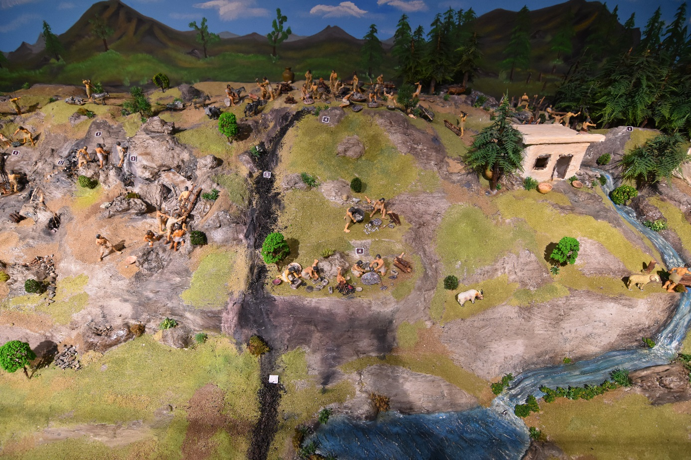

Jeofizik Araştırmaları
GRAVİTE-MANYETİK-RADYOMETRİK YÖNTEMLERİ
Gravite; Yapısal araştırmalarda (Havza, temel kaya topografyası, domlar, fay bloklarının tespiti), maden aramalarında (Krom, demir, bakır , barit, kurşun, kömür ve tuzların tespiti), Yüzeye yakın boşluklar, çöp, dolgu, döküntü dağılım sınırının tespitinde kullanılır.
Manyetik; Yer manyetik alanındaki değişimlerin ölçülmesi prensibine dayanmaktadır. Yapısal araştırmalarda (Temel kaya topografyası, püskürük kayaçlar, sokulum kayaçları, fayların tespiti), Gömülü ferromanyetik cisimlerin, toprakla doldurulmuş alanların ve arkeolojik yapıların tespitinde, Maden aramalarında (Manyetit, Hematit gibi) kullanılır.
Radyometrik; Yer kabuğunda doğal olarak bulunan radyoaktif elementlerini içeren kayaçlar değişik seviyelerde radyoaktivite değişimi gösterir ve gama ışını yayarlar. Bu tür yapıların radyoaktivite fiziksel değişiminin ölçülmesi temel prensiptir. Uranyum, toryum, potasyum gibi doğal radyoaktif element aramalarında, Metalik, kıymetli ve stratejik mineral aramalarında kullanılır.
KUYU LOGU YÖNTEMLERİ
Kömür Sondajlarında; sondajla kesilen kömür damarları sondaj takım dizisi içerisinden alınan radyoaktif ölçüler(Natural Gamma Ray, Neutron ve Density) ile net bir şekilde ayırt edilerek, karotlardan oluşturulan litoloji ile karşılaştırılır ve karotlarla belirlenen seviyelerde düzenlemeler yapılır.
Radyoaktif hammadde sondajlarında; Spektral Gamma Ray ölçüsü alınarak hem toplam Radyoaktivite(cps-API) hem de Uranyum(ppm), Toryum(ppm) ve Potasyum(%) değerleri sayısal olarak ölçülür ve radyoaktivite belirlenir.
Jeotermal sondajlarda; belirli zaman aralıklarında yapılan Sıcaklık ölçüleri ve litolojik diğer ölçüler birlikte değerlendirilerek, sondajın mevcut durumu, sıcaklığı, akifer özelliği, sondajın geleceği ve üretim aşamasındaki teçhizi ile ilgili bilgiler edinilir.
Hidrojeoloji sondajlarında: Akifer özellikleri ortaya konulur.
Jeoteknik sondajlarında: Sondaj ile geçilen birimler tespit edilmeye çalışılır.
.png)